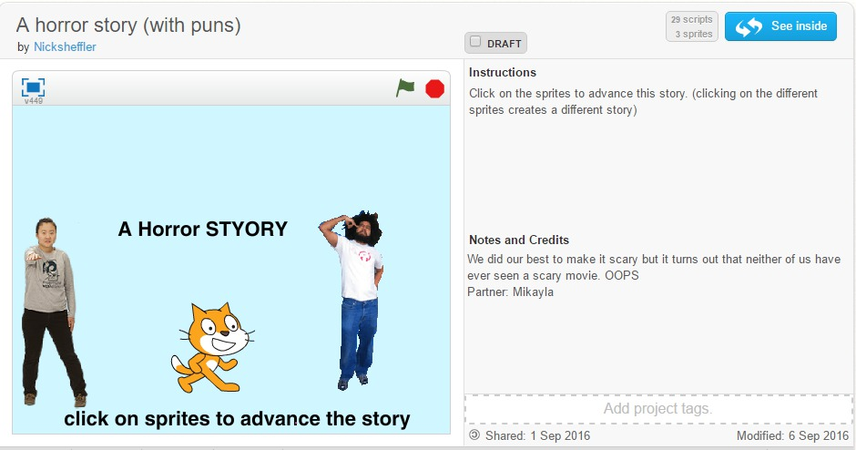
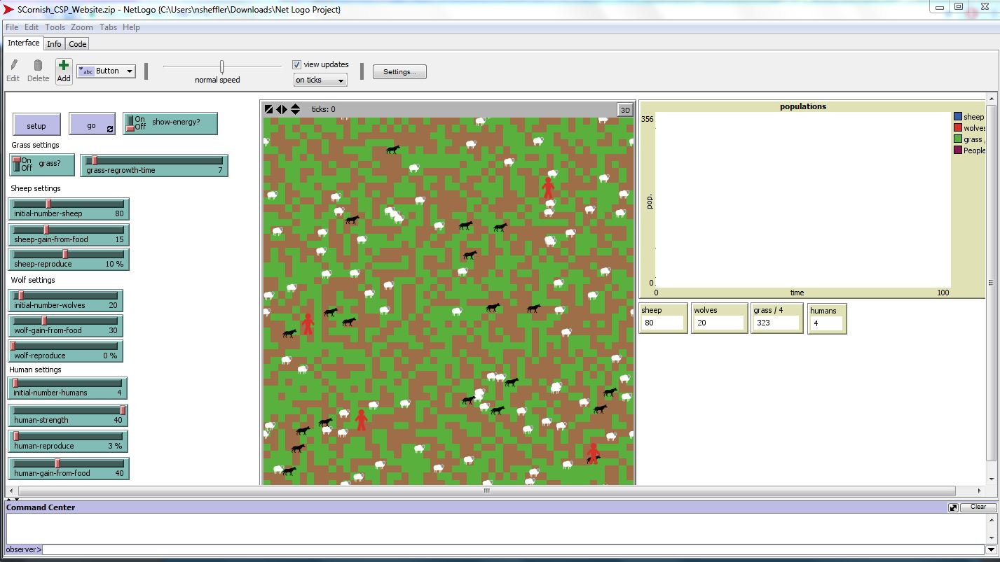

The Cage is a reimagination of Nicholas Cage's role in The Wicker Man.
This is my best attempt at creating Egyptian War. I hope you enjoy!
Data visualizations of pollution versus asthma which shows no correlation but demonstrates knowledge of matplot.
Net Logo simulation created by Sean Cornish and I in which humans have been added to a food web with wolves and sheep